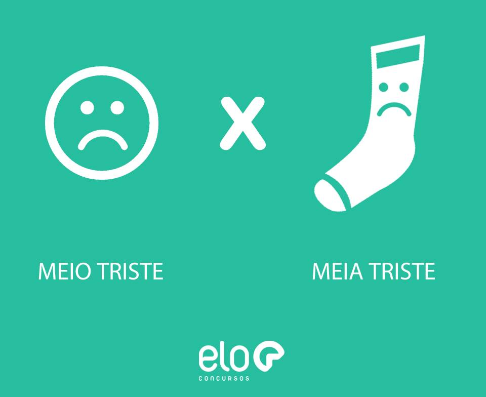
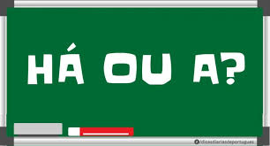
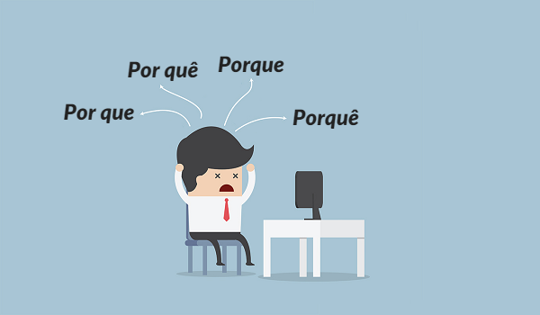

|  |
Meio deve ser utilizado quando se deseja expressar “um pouco” ou “mais ou menos. Já o termo meia deve ser utilizado quando se trata de “metade”. Exemplos: João é meio atrapalhado. Já tomamos meia xícara de café. |
|
A palavra mas é corretamente usada quando se deseja expressar “porém”, “contudo” ou “todavia”. Por outro lado, o termo mais indica aumento e corresponde ao contrário de “menos”. Exemplos: Achou que iria ganhar um carro, mas não ganhou. Eu fiz mais pontos que meu adversário. |
|  |
O termo há deve ser utilizado quando se deseja expressar o verbo haver, com sentido de tempo decorrido, algo passado. Já o termo a deve ser empregado quando não se tratar de tempo passado ou decorrido. Exemplos: Estudei esse assunto há muito tempo. Devo chegar daqui a pouco. |
|
O porque junto deve ser utilizado quando o desejo é dar uma explicação. Geralmente pode ser substituída, mantendo seu significado, pelos termos: “pois”, “uma vez que” e “para que”. Exemplo: Não fui ao futebol porque estava cansado. |
 |
|
O porquê junto com acento circunflexo deve ser utilizado quando significar "causa", "razão", "motivo" ou "circunstância". |
|
O por que separado pode ser utilizado em duas situações. Quando for a junção da preposição por + pronome interrogativo ou
indefinido que, nesse caso sendo equivalente aos termos “por qual razão” ou “por qual motivo”. Ou quando for a junção da
preposição por + pronome relativo que, nesse caso equivalente a “pelo qual”.Exemplos: |
|
O por quê separado com acento circunflexo é referente à junção da preposição por + o pronome interrogativo quê. Ocorre quando
o termo aparece no final da frase acompanhado de um ponto.
|